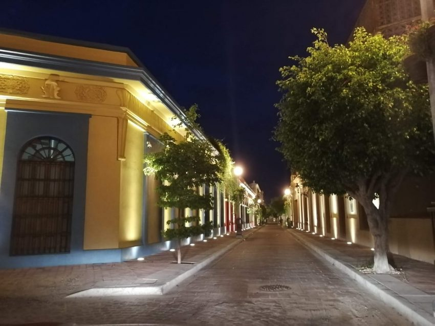
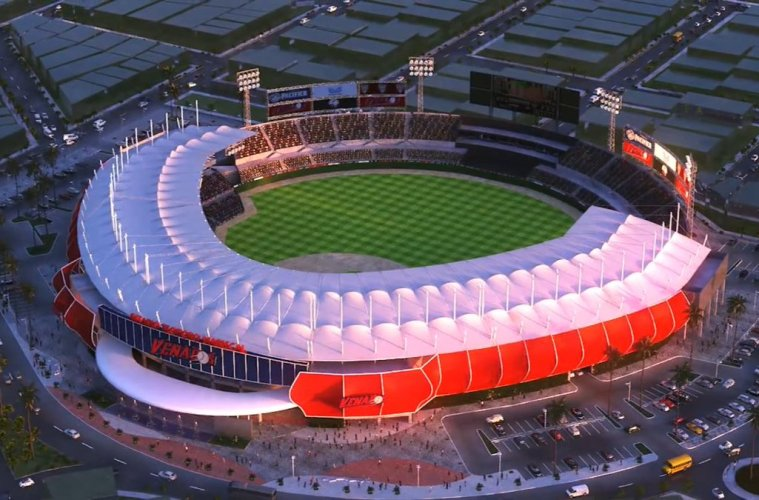
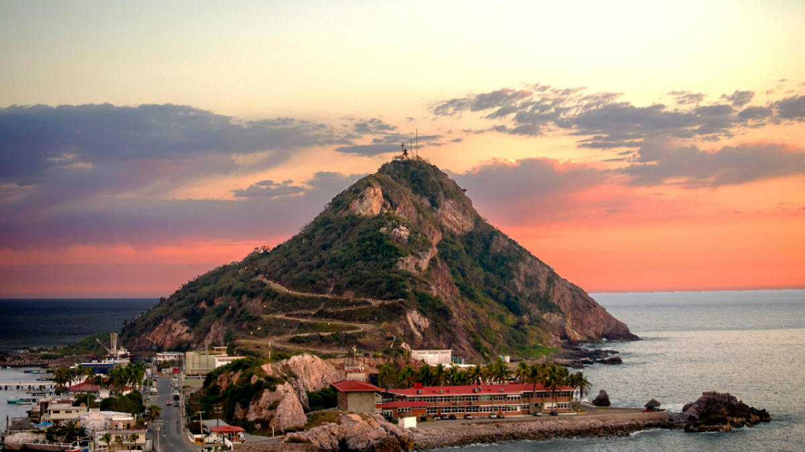
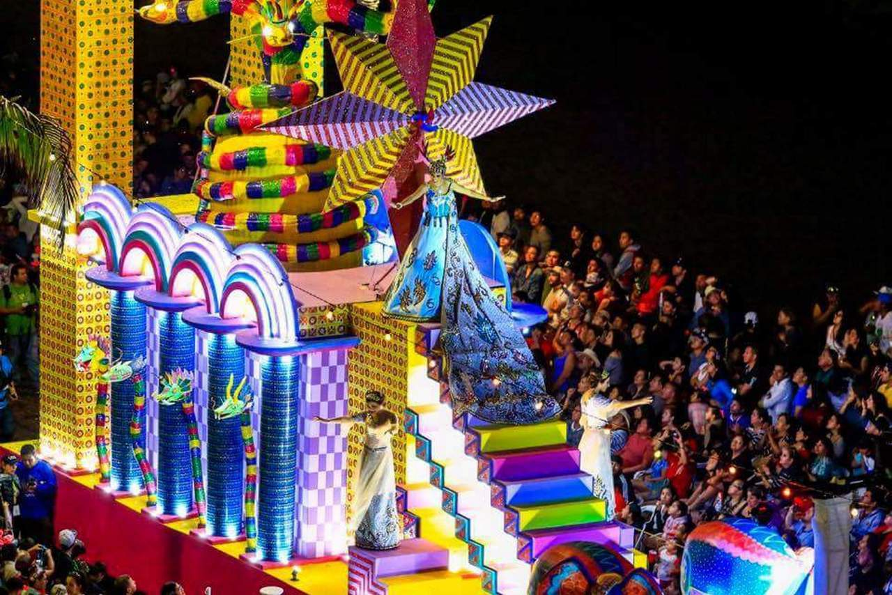

Mazatlán es una ciudad del noroeste de México y cabecera del municipio del mismo nombre. Fundada en 1531, está situada en el estado de Sinaloa.
Este puerto es un destino turístico de playa de México. Se ubica a 21 kilómetros al sur del trópico de Cáncer y colinda al norte con el municipio de San Ignacio y al poniente con el litoral del océano Pacífico. Es también conocida como "La perla del Pacífico". La ciudad se ha ido extendiendo con nuevas colonias, infraestructura, complejos turísticos y muchos kilómetros de playa localizada a lo largo de la zona costera que recorre 17 kilómetros. De acuerdo con el IV Conteo de Población y Vivienda 2020, Mazatlán tiene una población de 441,975 habitantes por lo que se mantiene como la segunda ciudad más poblada del estado de Sinaloa solo por debajo de Culiacán.
Mazatlán es reconocido a nivel mundial por ser un lugar turistico que ofrece muchas actividades para hacer estas son :
1. Da un paseo por el Centro Histórico. Ahí encontrarás la Plaza Machado, la Catedral y el teatro Ángela Peralta, el cual tiene el título de Patrimonio Histórico Nacional.

2. Saborea su deliciosa gastronomía: aguachile, pescado zarandeado, tacos gobernador, tacos de marlin, callos de hacha, ceviche de serra y más. *RESTAURANTES: El Muchacho Alegre, El Torito, Pancho´s y La Costa Marinera.
3. Camina por el Malecón, el segundo más largo del mundo. A lo largo de su recorrido, pasarás por restaurantes, bares, hoteles, monumentos y mucho más.
4. Visita el Acuario de Mazatlán, considerado como un de los más bonitos de México. Existe un espacio llamado la "pecera oceánica" la cual es la mas grande de Latinoamérica.
5. Si te gusta el beisbol, no dejes de asistir al estadio de los Venados de Mazatlán.

6. Pasa una tarde en las mejores playas: Olas Altas, Playa Norte, Playa Gaviotas, Isla La Piedra, Playa Cerritos y más.
7. Sube al Faro de Mazatlán, considerado el segundo faro natural más alto del mundo.

Caracteristicas de Mazatlán
Un destino de playa, diversión y cultura sin pretensiones.
Mazatlán es un eterno favorito de quienes huyen del frío y buscan un entorno cálido y acogedor.
Dotado de una costa salpicada de paradisíacas islas, un hermoso paseo marítimo, kilómetros de playas doradas y lagunas azules.
¿Por que es tan popular mazatlán?
Por sus playas
Las playas de mazatlan ,son de las bellezas que mas atraen a los turistas gracias a su impresionante belleza.
Por su extraordinaria gastronomia
Mazatlán, reconocido como la capital del camarón, es un sitio donde la gastronomía de la zona, es parte de sus atractivos.
Cuando estés en este paradisiaco destino, tendrás la oportunidad de saborear los platillos típicos de Manzanillo, basados en recetas tradicionales, te brindan sabores deliciosos con sus comidas en base a pescados y mariscos como sus tostadas de ceviches, tacos de camarón, empanadas de marlín, tamales barbones de camarón, camarones rellenos, caldo de camarón, albóndigas de pescado, chicharrón de pescado, chicharrón de calamar, pescado sarandeado, pescado chino, camarón Sinaloa, campechanas, aguachile y la sopa costella.
De igual manera, otros platillos que no llevan pescado como el chilorio, carne de cerdo deshebrada y condimentada con salsa de chile ancho y otras especias; el pollo asado estilo Sinaloa; el mochomo o carne de res tipo cecina; los pichones empapelados, el pipían, el pato en salsa de lichis, los tacos de lengua, pozole, cocido, birria y barbacoa, solo por mencionar algunas de las alternativas que puedes disfrutar, en tu paseo por este lindo lugar.
Suma a tu selección de alimentos del día, unos postres deliciosos y una bebida que acompañe, las alternativas son muchas pero los más recomendados son un jamoncillo, las cocadas, capirotada, una jericalla, arroz con leche, los tacuarines, empanochadas, el pastel de tres leches y ponteduros; entre las bebidas, deléitate con un tejuino, la chia, atole de pinole, agua fresca de cebada, de ciruela, melón, tamarindo, nanchi y muchas más.
Por su transporte
Seguro caminando por el malecón o por cualquier parte de Mazatlán te encontrarás con la pulmonía, vehículos muy similares a carritos de golf. Son un ícono del puerto y no solo para transporte de punto a punto sino también como atracción turística.
>width=560,height=315>
Por su música
El repertorio tradicional denota una estirpe dominantemente de origen europeo en el que predominan huapangos, corridos, polkas, valses, mazurcas y chotises, con adaptaciones regionales acorde a la sensibilidad del sinaloense.
width=560,height=315>
Por el carnaval
El Carnaval Internacional de Mazatlán es un evento cultural realizado en Mazatlán, Sinaloa, entre los meses de febrero y marzo abarcando los seis días anteriores al miércoles de ceniza, considerado el más importante del puerto y el carnaval más reconocido de México. Es considerado como el tercer carnaval más importante del mundo por la Revista Forbes.[cita requerida] Con más de un siglo de historia el carnaval mazatleco cuenta con características propias que lo diferencian del resto, dándole una identidad única que le da forma a la cultura de quienes lo realizan.

ES POR ESO Y MUCHAS COSAS MAS , QUE MAZATLAN ES UNO DE LOS LUGARES TURISTICOS MAS IMPORTANTES DE MÉXICO.


 >width=560,height=315>
>width=560,height=315>

 width=560,height=315>
width=560,height=315>